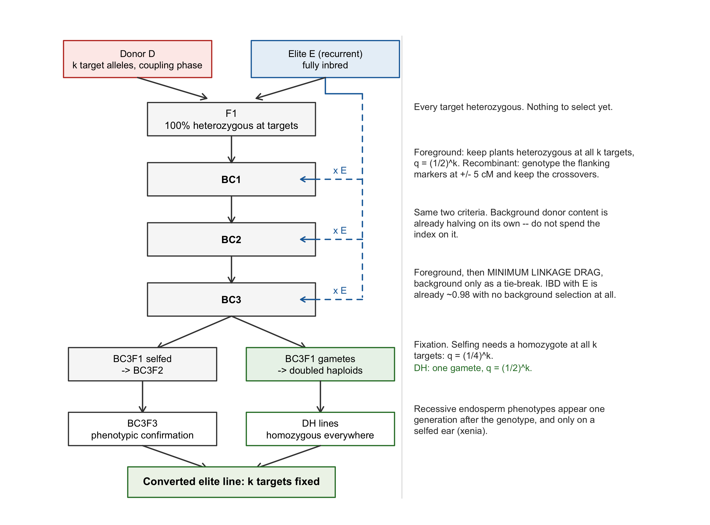
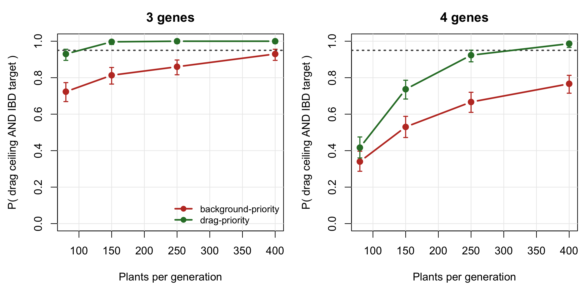
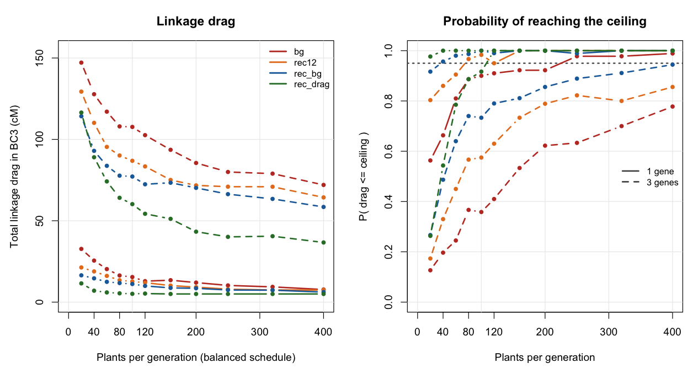
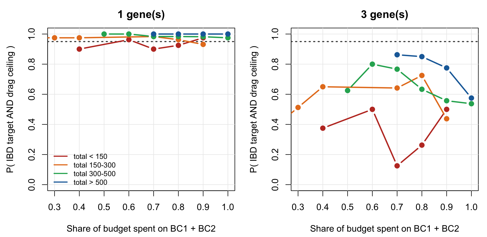
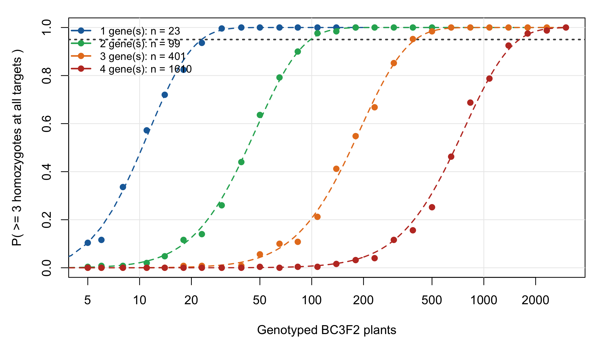
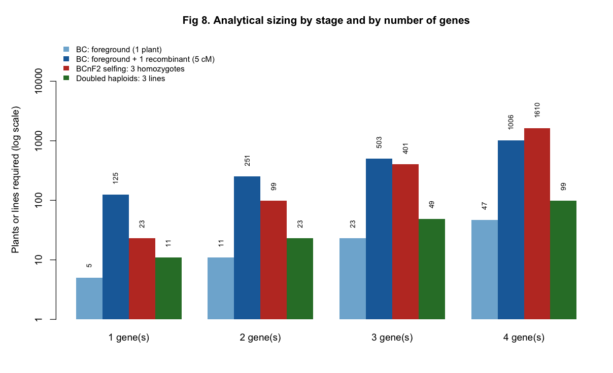

6 Introgressing several genes by backcrossing
Chapter 5 sized a segregating population for diversity: the objective was to sample as much of the cross as possible. This chapter is the mirror image. A donor line carries \(k\) genes worth having and an elite line carries everything else worth having, and the job is to move the \(k\) genes across while throwing the rest of the donor away. Here donor genome is contamination, and the only diversity that is wanted is the \(k\) target loci themselves.
The operation is marker-assisted backcrossing (MABC). The numbers below come from a simulator of it: a marker grid at 5 cM on ten maize chromosomes (1670 cM), one selected plant advanced per generation, \(k = 1\) to \(4\) recessive targets from a single donor, carried to BC3. It ships with the package – the engine and the selection index are R/08_mabc.R, the experiment driver is inst/scripts/run_mabc.R – and Section 6.8 shows how to run it.
6.1 The operation, in one diagram
Before any sizing question can be asked, the crossing operations have to be unambiguous – which plant is pollinated by which, and what is genotyped at each step.
Two features of that diagram do all the work in the rest of the chapter. The recurrent parent re-enters at every backcross, so donor content halves every generation whether or not anyone selects for it; and the fork at the bottom is where the plant numbers explode, because fixation asks for a homozygote and backcrossing never does.
6.2 The model
Two states, one haplotype. The recurrent parent is a fully homozygous inbred, so the gamete it contributes is invariant and only the donor-derived haplotype has to be tracked: a binary vector over 334 markers. Meiosis is a per-interval Bernoulli switch with Haldane’s
\[ r = \tfrac{1}{2}\bigl(1 - e^{-2d/100}\bigr), \]
which is exact for this chain precisely because Haldane is memoryless (see the limitation in Section 6.9).
Donor dosage and IBD are different quantities. Donor and elite already share a fraction \(s\) of the genome by descent – they are both maize, and often both from the same heterotic group. Donor genome inside a shared tract costs nothing. So with \(D\) the donor dosage,
\[ \text{IBD}_E = 1 - (1 - s)\,D, \qquad \text{IBD}_E + \text{donor-specific} = 1 . \]
Both identities hold exactly in the simulator and are asserted in its test battery. Everything below uses \(s = 0.6\).
Coupling phase. All \(k\) targets come from one donor, on the same haplotype. Two consequences, and the second is easy to get wrong. Linked targets travel together, so linkage drag is the union of the donor segments, not their sum. And conditional on both flanking targets being donor-derived, an even number of crossovers is forced in the interval between them, so the probability that they sit in one continuous donor segment is not \(e^{-L}\) but
\[ P_{\text{same}} = \frac{e^{-L}}{\bigl(1 + e^{-2L}\bigr)/2}, \qquad L = d/100 \text{ Morgans}. \]
data.frame(d_cM = c(20, 60, 400),
naive = exp(-c(20, 60, 400) / 100),
conditional = p_same_segment(c(20, 60, 400)))| d_cM | naive | conditional |
|---|---|---|
| 20 | 0.8187308 | 0.9803280 |
| 60 | 0.5488116 | 0.8435507 |
| 400 | 0.0183156 | 0.0366190 |
At 20 cM that is 0.98 against a naive 0.82. Published stacking simulations get this wrong often enough that it is worth stating separately.
ImportantIf the alleles come from different donors, none of this applies
Coupling phase is an assumption, not a convenience. Two linked targets in repulsion, from two donors, cannot both be recovered without a recombinant in the interval, and the cost explodes. That programme needs an intercross between the donors before any backcrossing starts, and this model does not describe it.
6.3 Three criteria, and only one of them binds
A conversion programme is usually written with three success conditions at BC3: do not lose the genes, recover the recurrent parent, and do not drag a chunk of donor chromosome along with each target. They are not remotely equal in cost.
Not losing the genes is exact and cheap. A plant is foreground-positive with probability \(q = (1/2)^k\), so \(n\) plants fail with probability \((1-q)^n\):
data.frame(genes = mb_sz$genes, q = mb_sz$q_foreground,
n_BC_per_gen = vapply(mb_sz$q_foreground, n_for_count, integer(1)))| genes | q | n_BC_per_gen |
|---|---|---|
| 1 | 0.5000 | 5 |
| 2 | 0.2500 | 11 |
| 3 | 0.1250 | 23 |
| 4 | 0.0625 | 47 |
Fewer than 50 plants per generation at four genes, and that is the whole foreground problem.
Recovering the elite is free by BC3. With no background selection at all, expected donor dosage after 3 backcrosses is \((1/2)^{4} = 0.0625\), so
\[ \text{IBD}_E = 1 - (1 - s)\,(1/2)^{4} = 0.975 \]
at \(s = 0.6\) – comfortably above a 90% target before a single background marker is scored.
| genes | N = 20 | N = 80 | N = 200 | N = 400 |
|---|---|---|---|---|
| 1 | 0.984 | 0.995 | 0.997 | 0.998 |
| 2 | 0.970 | 0.985 | 0.990 | 0.992 |
| 3 | 0.956 | 0.973 | 0.980 | 0.984 |
| 4 | 0.944 | 0.954 | 0.969 | 0.975 |
That leaves linkage drag – the donor chromosome still attached to each target – as the only criterion that a large population can buy. It is the criterion the rest of the chapter is about.
NoteThe reframing
An index that spends its decisive stage on background recovery is spending it on the criterion that was already satisfied. This is not a hypothetical: it was the defect the technical review found in the first version of this simulator, and correcting it reverses the headline conclusion. The next section is that correction.
6.4 Which selection index
Four policies, all applied to foreground-positive plants only:
| Key | Rule |
|---|---|
bg |
minimise background donor content |
rec12 |
recombinant selection in BC1-BC2 only (classical practice), then background |
rec_bg |
recombinant selection throughout, background decides among survivors |
rec_drag |
recombinant selection throughout, linkage drag decides, background breaks ties |
rec_bg is the natural-looking two-stage rule: truncate on drag, then pick the cleanest background among the survivors. Stage 2 discards stage 1. The plant with the least drag survives the truncation and then loses to a sibling that happens to carry less donor genome somewhere irrelevant.

| genes | N/gen | drag cM | IBD | P(both) | drag cM | IBD | P(both) |
|---|---|---|---|---|---|---|---|
| 3 | 80 | 78.7 | 0.972 | 0.723 | 64.6 | 0.962 | 0.930 |
| 3 | 150 | 68.8 | 0.979 | 0.813 | 49.4 | 0.966 | 0.997 |
| 3 | 250 | 65.7 | 0.982 | 0.860 | 41.5 | 0.968 | 1.000 |
| 3 | 400 | 59.0 | 0.984 | 0.930 | 36.0 | 0.969 | 1.000 |
| 4 | 80 | 138.9 | 0.956 | 0.340 | 130.2 | 0.952 | 0.417 |
| 4 | 150 | 120.9 | 0.965 | 0.530 | 105.7 | 0.958 | 0.737 |
| 4 | 250 | 107.9 | 0.971 | 0.667 | 87.6 | 0.960 | 0.923 |
| 4 | 400 | 103.9 | 0.973 | 0.767 | 75.3 | 0.961 | 0.987 |
The trade is 1.1 percentage points of IBD for 19.2 cM of drag, and since the IBD constraint was met in every replicate with margin, it is free. Four genes reach 0.987 at 400 plants per generation. Under the background-priority index the same cell reaches 0.767, which is what produced the original – and wrong – conclusion that the ceiling is unreachable at four genes and the programme must be extended to BC4-BC5 or split in two. The wall was a property of the index, not of maize.
6.5 How long to keep selecting recombinants

Classical practice stops recombinant selection after BC2, on the reasoning that BC3 is for background clean-up. By BC3 the background needs no clean-up, and the expected distance to the nearest crossover from a target shrinks as \(1/g\) with generation \(g\) – so BC3 is the generation where a plant buys the most drag reduction. Both of the free changes in Figure 6.3 point the same way: genotype the flanking markers in BC3 as well, and let drag decide.
6.6 Allocating a fixed budget across BC1, BC2 and BC3
Given a total number of plants to grow, how should they be split between the three backcrosses?

A paired re-run at a fixed budget of 360 plants, three genes, makes the ordering explicit:
| BC1/BC2/BC3 | drag cM | P(both) | lo | hi | drag cM | P(both) | lo | hi |
|---|---|---|---|---|---|---|---|---|
| 300/40/20 | 93.0 | 0.448 | 0.385 | 0.512 | 75.6 | 0.656 | 0.594 | 0.715 |
| 120/120/120 | 72.6 | 0.772 | 0.715 | 0.823 | 53.5 | 0.988 | 0.965 | 0.998 |
| 20/150/190 | 78.7 | 0.640 | 0.577 | 0.700 | 58.9 | 0.876 | 0.829 | 0.914 |
| 40/120/200 | 74.3 | 0.748 | 0.689 | 0.801 | 58.1 | 0.940 | 0.903 | 0.966 |
| 200/120/40 | 79.7 | 0.680 | 0.618 | 0.737 | 59.3 | 0.932 | 0.893 | 0.960 |
The balanced schedule wins under both indices, and 300/40/20 – the intuitive “cast a wide net early” schedule – is the worst. The mechanism is the \(1/g\) shrinkage again: a plant grown in BC3 is offered a much shorter donor segment to trim than a plant grown in BC1, so it converts into drag reduction far more efficiently.
6.7 Fixing the stack: selfing against doubled haploids
Backcrossing only ever asks for a heterozygote. Fixation asks for a homozygote at all \(k\) targets, and that is where the plant numbers move by an order of magnitude. Selfing a BC3F1 gives \(q = (1/4)^k\); a doubled haploid derived from a BC3F1 gamete is homozygous everywhere, so it carries all \(k\) targets with \(q = (1/2)^k\).
And the requirement is not one plant but 3, which is a cumulative binomial \(P(\text{Bin}(n, q) \ge 3) \ge 0.95\), not \(1 - (1-q)^n\):
| genes | q (selfing) | BC3F2 plants | q (DH) | DH lines |
|---|---|---|---|---|
| 1 | 0.25000 | 23 | 0.5000 | 11 |
| 2 | 0.06250 | 99 | 0.2500 | 23 |
| 3 | 0.01562 | 401 | 0.1250 | 49 |
| 4 | 0.00391 | 1610 | 0.0625 | 99 |


At four genes that is 1610 BC3F2 plants against 99 DH lines, a factor of 16.3. For maize, where DH is routine, the alarming number is not the real bottleneck.
Without DH there is a staggered alternative. Do not ask one generation to fix everything. Select BC3F2 plants homozygous for two targets and heterozygous for the other two (roughly 330 plants), then close out the remaining two at BC3F3 (roughly 100). Two stages of hundreds instead of one of thousands, at the cost of one generation.
6.8 Running the simulation
Everything above is reproducible from the package. The engine and the decision layer are in R/08_mabc.R; the experiment driver that produced the cached tables is inst/scripts/run_mabc.R.
One programme, interactively. Build a map, place the targets, draw the donor-elite sharing, and run the three backcrosses:
map <- build_map(maize_chr_len, spacing_cM = 5)
w <- marker_weights(map)
tg <- target_indices(map, k = 3) # the first three of maize_targets
sh <- make_shared_ibd(map, s = 0.60, mw = w, target_idx = tg)
pr <- run_bc_program(n_sched = c(120, 120, 120), s = 0.60,
strategy = "rec_drag", map = map, opt = mabc_opt,
tg = tg, w = w, shared = sh)
fmt(pr$traj, 3)| gen | ibd | dose | drag | n_fg | ibd_pop_mean | fail |
|---|---|---|---|---|---|---|
| 1 | 0.878 | 0.251 | 162.5 | 13 | 0.891 | FALSE |
| 2 | 0.934 | 0.127 | 97.5 | 12 | 0.925 | FALSE |
| 3 | 0.951 | 0.094 | 70.0 | 15 | 0.952 | FALSE |
n_sched is the schedule, one entry per backcross, so c(300, 40, 20) and c(120, 120, 120) are the two allocations compared above. Passing the same shared mask to two calls is what makes a comparison between selection indices paired rather than confounded with the donor-elite pair.
Comparing indices on common random numbers. Reset the seed before each strategy so the two programmes see the same meioses:
drag_of <- function(strategy) {
set.seed(7)
run_bc_program(c(120, 120, 120), 0.60, strategy, map, mabc_opt, tg, w,
shared = sh)$traj$drag[mabc_opt$n_bc]
}
c(rec_bg = drag_of("rec_bg"), rec_drag = drag_of("rec_drag"))
#> rec_bg rec_drag
#> 60 45A single replicate is noise; the tables above are 300 of these per cell, which is the driver’s job.
The analytical sizing needs no simulation at all. It is a cumulative binomial, so it is exact and instant:
sizing_table(k_max = 4, flank_cM = 5, P = 0.95, n_keep = 3)| genes | q_foreground | n_BC_1plant | n_BC_1rec | q_F2 | n_F2_1plant | n_F2_3plants | q_DH | n_DH_3lines |
|---|---|---|---|---|---|---|---|---|
| 1 | 0.5000 | 5 | 125 | 0.2500000 | 11 | 23 | 0.5000 | 11 |
| 2 | 0.2500 | 11 | 251 | 0.0625000 | 47 | 99 | 0.2500 | 23 |
| 3 | 0.1250 | 23 | 503 | 0.0156250 | 191 | 401 | 0.1250 | 49 |
| 4 | 0.0625 | 47 | 1006 | 0.0039063 | 766 | 1610 | 0.0625 | 99 |
The full scans, from the shell. The driver runs the whole grid – four policies by four gene numbers by eleven population sizes by three values of \(s\), plus the allocation grid and the BCnF2 stage – and writes the CSVs, the nine figures and a self-contained HTML report:
Rscript inst/scripts/run_mabc.R --test # 35 checks, ~10 s
Rscript inst/scripts/run_mabc.R --quick --out=DIR # reduced grid, ~30 s
Rscript inst/scripts/run_mabc.R --out=report/mabc # the full run, ~3 minThe cached tables this chapter reads are the full run’s results_uniform.csv, results_allocation.csv, results_bcnf2.csv and analytical_sizing.csv, copied into book/data as mabc_*.csv; the header of the driver lists the copy commands.
Pointing it at your own programme. Three things change and nothing else:
# 1. your map
map <- build_map(my_chr_len_cM, spacing_cM = 5)
# 2. your targets -- same columns as maize_targets
my_targets <- data.frame(gene = c("A", "B"), chr = c(1, 5),
pos_cM = c(40, 110), label = c("A", "B"))
tg <- target_indices(map, k = 2, targets = my_targets)
# 3. your criteria
opt <- utils::modifyList(mabc_opt,
list(n_bc = 4, drag_per_gene = 20, target_ibd = 0.95))s – how much of the genome your donor and your elite already share – is the parameter worth measuring rather than assuming. It scales the whole cost: at \(s = 0.7\) most of the donor genome that survives is free, at \(s = 0\) none of it is.
6.9 Assumptions, and what is not modelled
These matter more than usual here, because unlike the diversity chapters this one is used to decide field area.
No crossover interference (material, and it cuts against the results above). Meiosis is Haldane, so crossovers are independent between intervals. Maize has strong positive interference. For the event this simulation depends on most – a double recombinant in the two 5 cM intervals flanking a target, which is what turns a long donor segment into a short one – Haldane gives \(2.26 \times 10^{-3}\) against \(4.90 \times 10^{-4}\) under a coincidence model. The model over-produces tight recombinants by about 4.6x, so every population size quoted for close-in trimming is a lower bound. Note the direction: the index correction makes the problem easier, interference makes it harder, and they do not cancel in any principled way. The correct fix is a crossover-position sampler – chiasmata as a stationary gamma renewal process with shape \(\nu\) – which reduces to Haldane exactly at \(\nu = 1\) and so is backward compatible; maize estimates put \(\nu\) near 3.
One plant advanced per generation. Real programmes advance 3-10 and cross each to the recurrent parent. Every probability in this chapter is therefore a single-lineage probability: it understates achievable progress and it removes lineage-level variance from every distribution shown.
Uniform recombination rate, no distortion, no genotyping error. Maize has 5-10x rate variation and strongly suppressed pericentromeric regions; a target in a cold region carries drag no feasible population will trim. Gametophyte factors shift the foreground frequency away from \(1/2\). Map positions here are illustrative and not pinned to a named consensus map – and IBM-type maps must be rescaled before use, exactly as in Chapter 5.
Triploid endosperm genetics is not modelled. The illustrative targets are endosperm genes. The endosperm is 2 maternal : 1 paternal, so a recessive kernel phenotype does not appear on the ear of a heterozygous plant: phenotypic confirmation lags the genotype by one generation, and xenia means it requires a self-pollination, not open pollination.
The gene set is illustrative, not a breeding recommendation. sh2 and bt2 encode the two subunits of the same enzyme, so stacking both is largely redundant – dropping one turns the hard case (\(k = 4\)) into the comfortable one (\(k = 3\)). o2 alone gives opaque endosperm, not QPM: the hardness modifiers are polygenic, unlinked and unmodelled here, which changes the problem class from “stack \(k\) Mendelian genes” to “stack \(k\) genes plus a QTL background”.
WarningTwo statistical habits this chapter had to be repaired for
Select on the interval, not the point estimate. The first version of the sizing tables took the first grid point whose point estimate crossed 0.95. With 30-150 replicates the standard error is 0.02-0.09, so that is a winner’s curse: the tables were non-monotone in \(N\) (0.97, 0.97, then 0.93 at a larger \(N\)), which is a monotone quantity reading noise. Selection is now on the Clopper-Pearson lower bound, and intervals are reported everywhere.
Never type a number into the prose. Every figure in the original narrative was a string constant written against an earlier configuration; re-runs put the true values outside the reported confidence intervals, and the same document contradicted itself in three places. Every number in this chapter is interpolated from the cached tables at render time. Appendix C says which table each one comes from.
6.10 Where this connects
Chapter 5 sized a population to keep diversity; this chapter sized one to discard it everywhere except at \(k\) loci. The two share their machinery – the same map, the same Haldane meiosis, the same distinction between what is segregating and what is fixed – and they share the lesson that dominates both: size for the objective that binds. In Chapter 5 that meant not sizing for gene diversity, which saturates early. Here it means not sizing for background recovery, which is already satisfied at BC3, and putting the plants into the one criterion that a population can actually buy.
The converted lines this chapter produces re-enter the pool the rest of the book optimises over. A conversion programme run for its own sake reduces diversity by construction: it makes an elite line into a near-copy of itself. If several conversions are run in parallel off the same recurrent parent, the resulting lines are close to each other.
That has been asserted for a chapter and a half. It is cheap to measure, and the size of it is the argument. Eight BC3 conversions off one recurrent parent, against eight unrelated elite lines, put through the kernel of Chapter 1:
set.seed(11)
m_c <- 2000
elite <- matrix(rbinom(40 * m_c, 1, 0.5), 40, m_c) # unrelated elite lines
rec <- elite[1, ] # one recurrent parent
donor <- elite[40, ]
ibd <- expected_ibd(3, 0.5) # recurrent genome at BC3
conv <- t(sapply(1:8, function(i)
ifelse(rbinom(m_c, 1, ibd) == 1, rec, donor)))
cost <- data.frame(
panel = c("8 BC3 conversions, one recurrent parent", "8 unrelated elite lines"),
theta = c(mean(molecular_coancestry(conv)),
mean(molecular_coancestry(elite[1:8, ]))))
cost$GD <- 1 - cost$theta
fmt(cost, 4)| panel | theta | GD |
|---|---|---|
| 8 BC3 conversions, one recurrent parent | 0.9714 | 0.0286 |
| 8 unrelated elite lines | 0.5617 | 0.4383 |
The converted panel carries about 0.07 times the gene diversity of the unrelated one – not a marginal erosion but a different order of magnitude, and it follows directly from expected_ibd(3, 0.5) = 0.969. Conversion is designed to make lines identical everywhere except the target, and it succeeds.
Two consequences for the rest of the book. A conversion programme must be counted against the diversity budget of Chapter 14 rather than run alongside it, because \(\theta\) cannot distinguish eight conversions from one line entered eight times. And Chapter 12’ per-line usage cap is the mechanism that already handles this: capping how often a line is used caps how often its near-copies are, provided the conversions are recognised as near-copies rather than entered as eight independent parents.
WarningDo not enter a converted panel as independent lines
The failure mode is administrative, not statistical. Conversions arrive with distinct line codes and distinct pedigree entries, so a pipeline that trusts the codes will treat them as eight parents. The coancestry matrix will not, and Chapter 11’s recommendation to compute \(\theta\) on markers rather than on pedigree is what protects against exactly this.